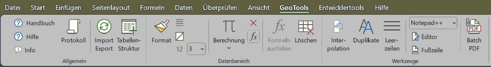

|
Was sind die GeoTools?
|
 
|
... eine Sammlung von Werkzeugen für Excel 2016, die insbesondere das Arbeiten mit einfachen Listen effizienter gestalten sollen, im Einzelnen:
Funktionen für beliebige Tabellen:
· Standard-Fußzeile
eintragen.
· Interpolationsformel
erstellen.
· Leerzeilen
im Intervall einfügen
· Doppelte
Werte in einer Spalte markieren.
· Strukturierung
der Tabelle in Datenbereich und Kopf
· PDF-Stapel-Export
Funktionen für bereits strukturierte Tabellen bzw. Vorlagen:
· Projektdaten in den Tabellenkopf eintragen (nur bei Import/Export).
· Formatierung des Datenbereiches.
· Berechnungen
oder/und Textmanipulationen über ganze Spalten
· Import
/ Export von Daten für z.T. spezielle Anwendungen.
· Ergebnis
ist immer eine neue Excel-Tabelle
· Als
Datenquelle können dienen:
- die aktive Tabelle
- eine spezielle ASCII-Datei, für die ein Import-Modul realisiert ist.
- eine CSV-Datei mit passendem Kopf
Zugriff auf die Funktionen der GeoTools:
· ... erfolgt über das Menüband, Registerkarte "GeoTools"

· Die Befehle stehen i.d.R. nur dann zur Verfügung, wenn sie sinnvoll
einsetzbar sind. Ein Befehl, der eine vorhandene Tabelle bearbeitet, ist
z.B. nicht verfügbar, wenn keine Tabelle aktiv ist usw.
· Die Import-Funktionen sind stark abhängig vom Vorhandensein
passender Tabellenvorlagen. Diese Vorlagen können wie jede andere
Vorlage als Grundlage zum Erstellen einer neuen Datei dienen (Befehl
Datei | neu).